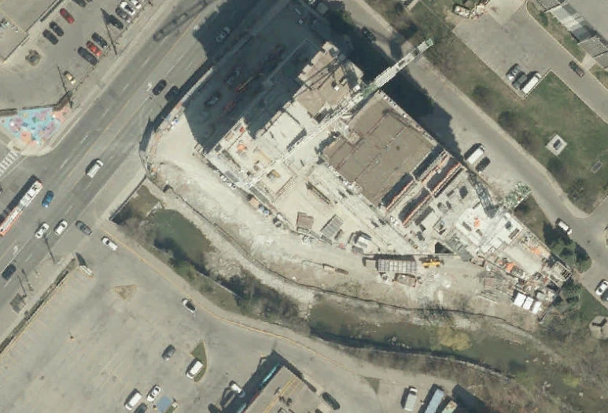

M City
Tower plans and construction updates.
Tower plans and construction updates.
The master plan for the former power plant lands.
Building shapes, streets, parks and trees.
Ground elevation and the offshore water boundary at Lakeview.
Photographs show the site around each building.

Mapped rails, beaches and parts of Pearson’s airfield.
The line from Port Credit to Brampton and the separate Downtown extension.
The planned bus corridor and preliminary design for Mississauga East.
Architectural massing © Zeidler Architecture Inc., supplied by Infrastructure Ontario. Daniel placed it in the city model.
See the references used to model each exterior.


Citywide model with proposals
City of Mississauga · Ontario data© OpenStreetMapArchitectural massing © Zeidler Architecture Inc.; supplied by Infrastructure Ontario. Independent city placement and visualisation by Future Mississauga.275 Superior Boulevard photo reference: David Lasker/Cityscape Photography · davidlaskerphotography.com
Port Credit in portrait
Browse all portrait views →City of Mississauga · Ontario data© OpenStreetMapDowntown aerial · 20 November 2026 · Original 6K PNG ↓ · Print PDF ↓
Credit Future Mississauga by Daniel Sultan, link to this site and keep the printed credit line visible. Label a proposed view when you share it.
Contains information licensed under the Open Government Licence – Ontario. © OpenStreetMap · ODbL 1.0.
Privately supplied drawings, photographs and correspondence stay private. Credits do not grant permission to reuse the original work.
Proposals can change. Tree placement, lighting and some building profiles are illustrative. This independent model is unsuitable for survey or engineering use.